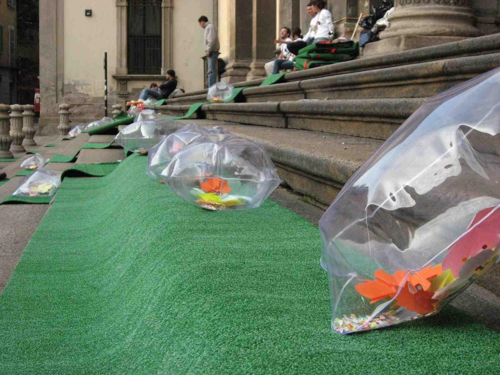
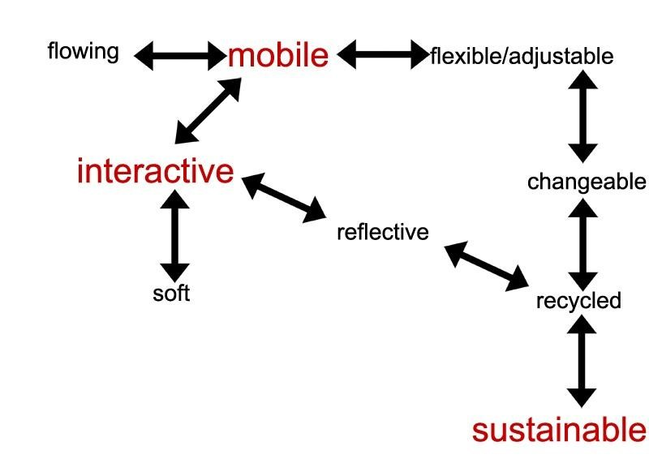
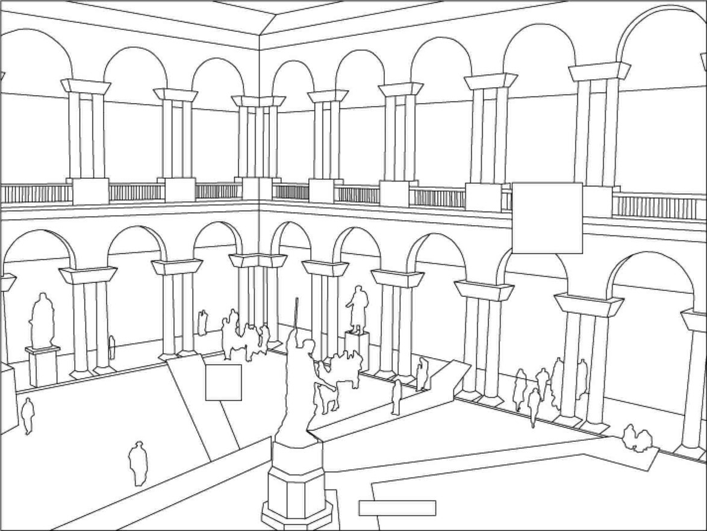
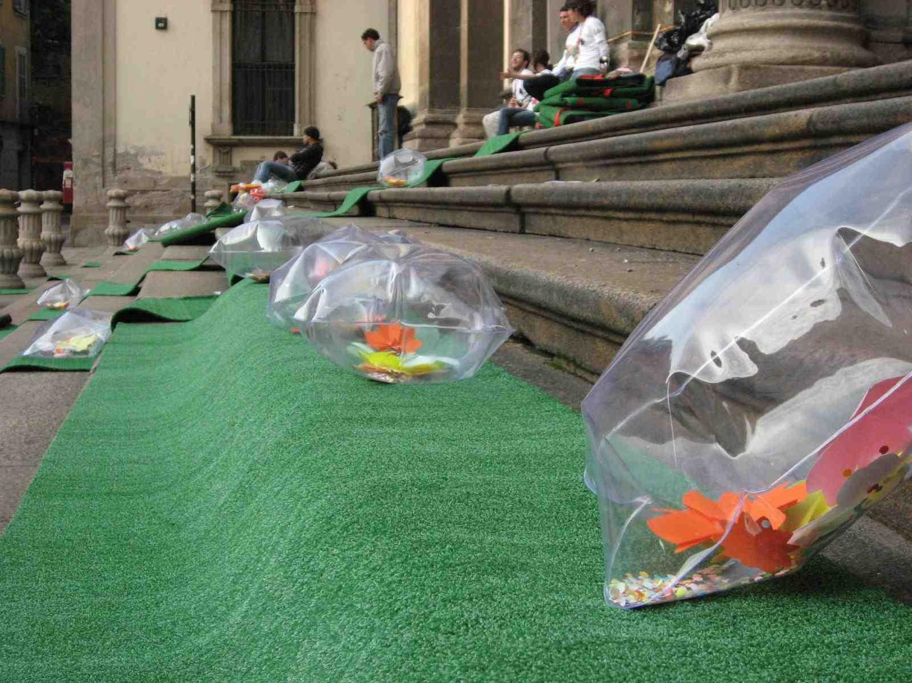
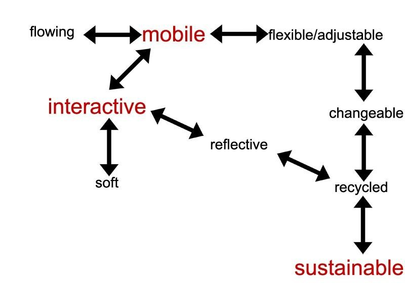
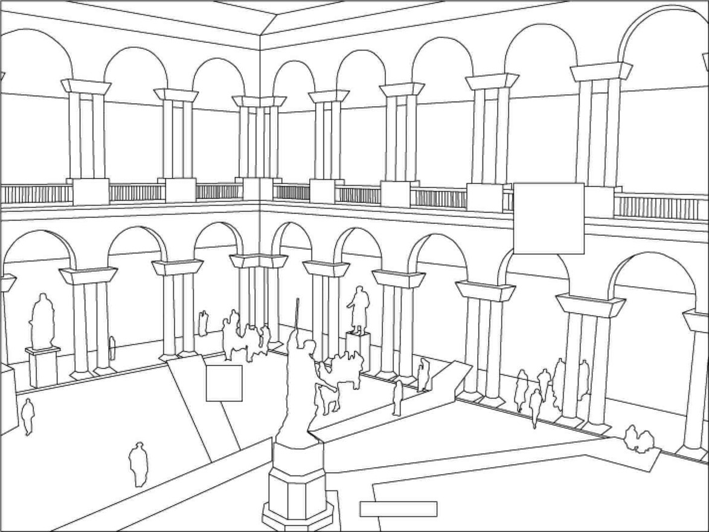

Exhibition: 2009/4 Project Exhibition at the International Milan Furniture Fair and Design Week" Salone del Mobile 2009" Milan,Italy
With the support from the Italian-Turkish Cultural Protocol and Bilkent University, Assistant Prof. Dr. Cihangir Istek with Harun Ekinoglu and six other students from the Faculty of Art, Design and Architecture were invited to participate in a project called MILANOMIFAMALE (Milan Hurts Me) during International Milan Furniture Fair and Design Week "Salone del Mobile 2009" - a prestigious event held in th city considered to be the Mecca for the design world.
Twenty-five art and design schools, including Bilkent University, London Central Saint Martins College of Art and Design, the Universities of Genoa, Florence, Rome and Turin, Design Academy Eindhoven, Dongduk Women's University in South Korea, Carnegie Mellon University, Rhode Island School of Design and Texas A & M University participated in the project. It was organized by NABA - Nuova Accademia di Bella Arti Milano - between April 22 and 27.
The students took part in a "conceptual mapping" of Milan with 100 selected sites. These were seen as places that reflected the love/hate relationship the residents of Milan feel for their city. In the project, "hospitality" was used as a synonym for "love." The passion and creative desire of hundreds of designers served as a backdrop to the whole event.
Each participating school chose a number of sites on a map of Milan and came up with unique design ideas for these places. They were temporarily prototyped at the sites they chose, and then exhibited and presented to the public at the NABA campus and in Piazza Duomo.
 




